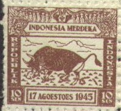
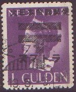
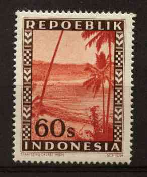
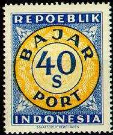

Return To Catalogue - Netherlands Indies
Note: on my website many of the
pictures can not be seen! They are of course present in the
catalogue;
contact me if you want to purchase the catalogue.
Some stamps with inscription "INDONESIA MERDEKA" and "REPOEBLIK INDONESIA":

These stamps were issued after the declaration of independance on 17 August 1945 by the areas controlled by the freedom fighters (just after the Japanese left). Stamps of Dutch Indies were used in parts of the country controlled by the Dutch.
I've also seen stamps with inscription "N.R. INDONESIA".
Stamps of Netherlands Indies, overprinted "REPOEBLIK INDONESIA":


15 c orange 20 c blue 25 c green 40 c green 45 c lilac 50 c lilac 80 c red 1 G violet (larger size) 2 1/2 G orange (different design) 10 G green (larger size) 25 G orange (larger size)
15 s red 25 s blue
Value 1 s grey 2 s lilac 2 1/2 s brown 3 s red 4 s green 5 s blue 7 1/2 s olive 10 s violet 12 1/2 s orange Temple 15 s red 20 s olive 25 s blue Statue 30 s orange 40 s green 45 s lilac Local house 50 s brown 60 s brown 80 s orange Local house (different design, larger size) 1 R violet 2 R green 3 R lilac Temple (larger design) 5 R brown 10 R grey 25 R brown
Most values exist with overprint "RIS" (horizontally on certain values and vertically on other values).
Examples, many of these issues are 'dubious', moreover many forged overprints exist:

(Netherlands Indies stamp overprinted with Japanese text)

These stamps are used by the Japanese Navy for use in the Lesser Sunda Islands, Molucca Archipelago and Districts of Celebes and South Borneo.

Many designs and values exist, also with overprint "MERDEKA DJOKJAKARTA 6 DJULI 1949" or "RESMI" (official stamps?).

1 s blue and orange 2 1/2 s brown and blue 3 1/2 s violet and green 5 s black and orange 7 1/2 s brown and blue 10 s blue and orange 20 s brown and yellow 25 s violet and lilac 40 s blue and red With overprint "MERDEKA DJOKJAKARTA 6 DJULI 1949" 1 s blue and orange 2 1/2 s brown and blue 3 1/2 s violet and green 5 s black and orange 7 1/2 s brown and blue 10 s blue and orange
(reduced size)
10 s green and brown (train and huts) 15 s red and blue (train and huts) With overprint "MERDEKA DJOKJAKARTA 6 DJULI 1949" 10 s green and brown (train and huts) 15 s red and blue (train and huts) 15 s green and brown (train and huts) 40 s brown and green (palm trees, inscription "POS UDARA EXPRES")
Many designs were issued, mainly with animals or flowers, they were never used in the territory they were intended to be used. These stamps are purely made for philatelic purposes. They were issued somewhere in the 1970's.


Some postage due stamps of Indonesia only have the inscription "BAJAR PORTO" or "BAYAR PORTO" and the value in "SEN" or "RUPIAH". They also exist with overprint "IRIAN BARAT".

10 c green and yellow 15 c green and yellow 20 c green and yellow 25 c green and yellow 30 c green and yellow 40 c green and yellow 50 c green and yellow 75 c brown and yellow 1 G brown and yellow 1.25 G brown and yellow 1.50 G brown and yellow 2 G brown and yellow 2.50 G brown and yellow 3 G brown and yellow 4 G brown and yellow 5 G red and blue 6 G red and blue 10 G red and blue 25 G red and blue 50 G red and blue 100 G red and blue
Fiscal stamps "METERAI TEMPEL"
0,20 green and yellow -.25 green and yellow -.30 green and yellow 0.50 green and yellow 0.75 brown and yellow 1.- brown and yellow 1.25 brown and yellow 1.50 brown and yellow 2.- brown and yellow 2.50 brown and yellow 3.- brown and yellow 4.- brown and yellow 4.50 brown and yellow 5.- red and blue 6.- red and blue 7.50 red and blue 10.- red and blue 15.- red and blue 25.- red and blue 50.- red and blue (exists with value '50.-' in black or red) 100.- red and blue 250.- blue and light blue 500.- blue and light blue 1000.- blue and light blue
Some of the above stamps exist with overprint '66' and surcharge of new value. Several values also exists with vertical "RIAU" overprint or horizontal "IRIAN BARAT" overprint.
0.50 blue and orange 1.- blue and orange 5.- brown and orange 10.- green and orange 25.- brown and orange 50.- red and green 100.- orange and grey 250.- green and red 500.- red and grey 1000.- blue and yellow 1500.- orange and yellow 2000.- green and red 2500.- violet and yellow
Other values might exist.
More fiscal stamps were issued after 1985.
Several fiscal stamps with inscription "METERAI RADIO" or "SUMBANGAN KIRAN RADIO" exists (issued from 1950 onwards).
More information on fiscal stamps of Indonesia can be found on http://home.planet.nl/~hvschaik/ (much of the above information was obtained there).
Stamps - Timbres-Poste - Postzegels - Briefmarken